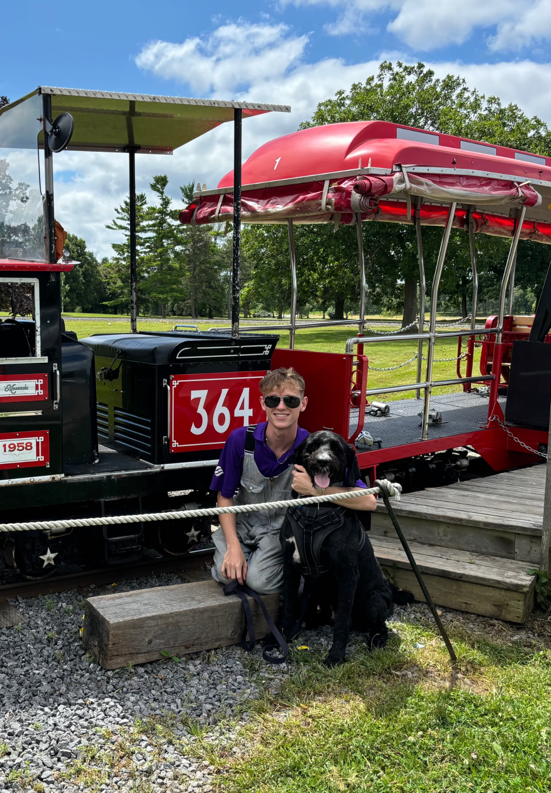

Welcome my name is Evan Waldroff. I am creative and i love to take photos and draw. I love to Travel and explore new places, I used to play hockey but now i spend my free time playing video games, creating and designing art. I would love to learn how to code my own website one day.
Im a creative and driven person with a passion for all kinds of art!
You miss 100 % of the shots you dont take! -Wayne Gretsky